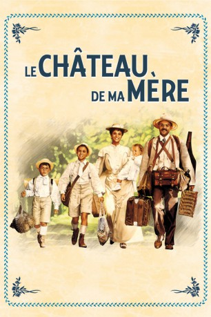
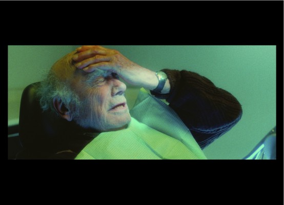

#3342 Das Schloss meiner Mutter
Alternativ: My Mother's Castle (Englischer Titel)
 
 IMDB-Wertung: 7.6 / 10
IMDB-Wertung: 7.6 / 10  Metascore: 0
Metascore: 0 
Familienfilm aus dem Jahr 1990 basierend auf dem Roman "Eine Kindheit in der Provence" des Schriftstellers Marcel Pagnol. Fortsetzung von "Der Ruhm meines Vaters". Marcel erlebt bei einem Ferienaufenthalt mit seiner Familie in der Provence so manches Abenteuer. Er lernt u.a. seine erste große Liebe kennen, doch er muss eine bittere Enttäuschung verkraften.
Jahr: 1990
Dauer: 98 Minuten
FSK: 6
Land: Frankreich Studio: Jugendfilm-VerleihTonspuren: DTS - ,
Untertitel: Englisch,
Auflösung: 720p (1280x688) Größe: 4608 MB
Genre: Drama, Komödie, Abenteuer, Liebe, Biographie
Regisseur: Yves Robert
Drehbuch: Marcel Pagnol, Jérôme Tonnerre, Yves Robert
Soundtrack: Vladimir Cosma
Darsteller:
-  Paul Crauchet als Edmond des Papillons
 Jean Carmet als Le garde ivrogne
Jean Carmet als Le garde ivrogne Jean Rochefort als Loïs de Montmajour / Adolphe Cassignole
Jean Rochefort als Loïs de Montmajour / Adolphe Cassignole Ticky Holgado als Binucci
Ticky Holgado als Binucci- Philippe Caubère als Joseph Pagnol
- Nathalie Roussel als Augustine Pagnol
- Didier Pain als Oncle Jules
- Thérèse Liotard als Tante Rose
- Julien Ciamaca als Marcel Pagnol
- Victorien Delamare als Paul Pagnol
- Joris Molinas als Lili des Bellons
- Julie Timmerman als Isabelle Cassignole
- Philippe Uchan als Bouzigue
- Patrick Préjean als Dominique, le jardinier
 Pierre Maguelon als François
Pierre Maguelon als François Michel Modo als Le facteur
Michel Modo als Le facteur Georges Wilson als Le comte colonel
Georges Wilson als Le comte colonel- Jean-Pierre Darras als Récitant / Narrator
- Josy Andrieu als
- André Chaumeau als
- Raoul Curet als Monsieur Vincent
- Alain Ganas als
- Jean-Marie Juan als Fenestrelle
- Louis Lalanne als
- Maxime Lombard als Monsieur Arnaud
- René Loyon als Monsieur Besson
- Elisabeth Macocco als
- Jean Maurel als
- Ivan Romeuf als
Datei: X:\2-Dilogie(N-Z)\Ruhm meines Vaters - Schloss meiner Mutter\Schloss meiner Mutter, Das (1990, FSK6, 1280x688).mkv seit 15.03.2016
Festplatte: HD Collection-2(A-Z)-3(A-M)
 Alle Filme aus Gruppe '2-Dilogie(N-Z)\Ruhm meines Vaters - Schloss meiner Mutter'
Alle Filme aus Gruppe '2-Dilogie(N-Z)\Ruhm meines Vaters - Schloss meiner Mutter'